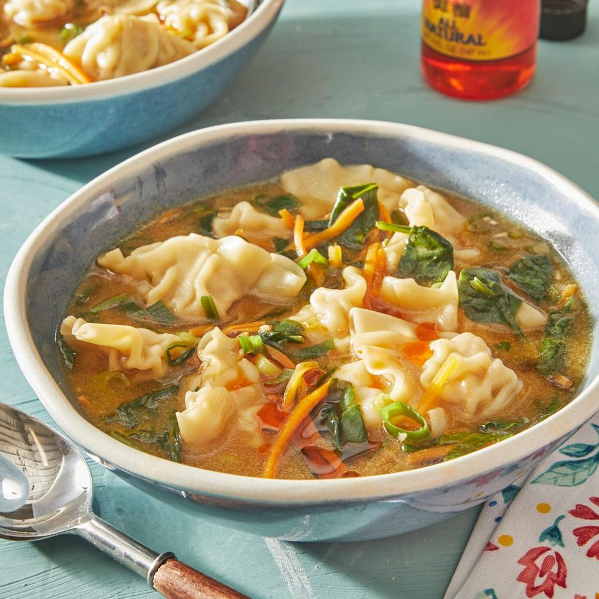

Soup Recipe

Ingredients
- 1 tbsp. vegetable oil
- 2 tsp. sesame oil
- 1 c. shredded carrots
- 5 green onions, thinly sliced, whites and greens separated
- 3 garlic cloves. finely chopped
- 1/4 tsp. ground ginger
- 1/4 c. white miso paste
- 6 c. chicken or vegetable broth, divided
- 1 lb. frozen mini dumplings
- 3 c. baby spinach
- 3 tbsp. soy sauce, plus more to serve
- Hot sauce or chili oil, to serve
Directions
- In a large pot, heat the vegetable oil and sesame oil over medium heat. Add the carrots, green onion whites, garlic, and ginger. Cook, stirring frequently, until the vegetables begin to soften, 2 to 3 minutes.
- In a small bowl, combine the miso paste with ½ cup broth, whisking until the miso paste is dissolved. Add the miso mixture and the rest of the broth to the pot and bring to a boil. Add the dumplings and bring to a simmer. Heat until the dumplings are heated through, 3 to 5 minutes. Stir in the spinach, cooking until the greens are wilted, 1 to 2 minutes.
- Add the soy sauce and green onion greens. Serve hot with hot sauce or chili oil, and extra soy sauce.